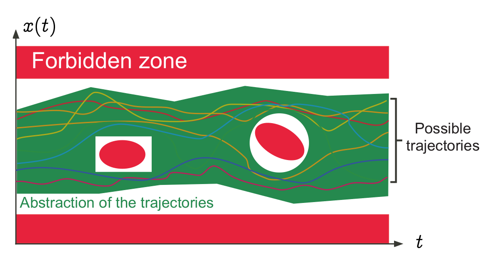

Votre mission si vous l'acceptez...
Programmer la fonction factorielleen C !
Pff, facile.
Programmer la fonction factorielle en C !
// #include ...
int fact(int n) {
assert(n >= 0); // ne doit pas être inférieur à 0
int i;
int r = 1; // pour n = 0 et 1, r = 1
for(i = 2; i <= n; i++) // calcul pour n > 1
r = r * i;
return r;
}
int main(int argc, char **argv) {
assert(argc > 1); // arrête l'exécution si aucun paramètre
int n = atoi(argv[1]); // recupération du paramètre
printf("%d! = %d\n", n, fact(n)); // impression du résultat
}Félicitations ! Vous êtes renvoyé !
Pourquoi ? Analysons l'exécution du programme.
$ ./fact 1
1! = 1$ ./fact 5
5! = 120$ ./fact 12
12! = 479001600Bah... Ça fonctionne ?
$ ./fact 50
50! = 0$ ./fact 18
18! = -898433024$ ./fact 5684864623
1389897327! = 0...

Explications
De nombreux bugs similaires sont découverts...
...Trop tard !
Interprétation Abstraite
Introduction au concept
Présenté par Arnaud Cojez
Sommaire
- Presentation
- Exemple
- Utilités
Vocabulaire
Sémantique
= exécutions possibles du programme
La fonction fact(n) renvoie 24 pour n = 4, etc.
Spécifications
= "règles" que doit suivre le programme
Par exemple : la fonction fact(n) ne doit pas renvoyer de nombre négatif, etc.
Indécidabilité
La sémantique d'un programme n'est pas calculable par ordinateur
- Théorèmes d'incomplétude – Kurt Gödel
- Problème de l'arrêt – Alan Turing
Limites des méthodes de tests classiques
Totalité de certaines exécutions non couvrable
Certaines exécutions oubliées
Solution : L'interprétation abstraite
Regrouper toutes les exécutions dans un intervalle
Attention
L'abstraction doit être simple à calculer...
... Mais suffisamment précise pour éviter les fausses alarmes
Elle doit contenir toutes les exécutions...
... Dans leur globalité
Exemple d'interprétation abstraite
Analysons ce programme
int foo(int a, int b) {
int k = 1; // k is constant: 1
int m, n;
if (a == 0) {
++k; // k is constant: 2
m = a;
n = b;
} else {
k = 2; // k is constant: 2
m = 0;
n = a + b;
}
return k + m + n; // k is constant: 2
}Interpétation concrète
Pour a = 0 et b = 7
(instruction) (interpreter state after instruction)
ENTRY a = 0, b = 7
k := 1 a = 0, b = 7, k = 1
COND a == 0 (TRUE)
k := k + 1 a = 0, b = 7, k = 2
m := a a = 0, b = 7, k = 2, m = 0
n := b a = 0, b = 7, k = 2, m = 0, n = 7
ret := k + m + n a = 0, b = 7, k = 2, m = 0, n = 7, ret = 9
RETURN ret
EXITPour a = 2 et b = 7
(instruction) (interpreter state after instruction)
ENTRY a = 2, b = 7
k := 1 a = 2, b = 7, k = 1
COND a == 0 (FALSE)
k := 2 a = 2, b = 7, k = 2
m := 0 a = 2, b = 7, k = 2, m = 0
n := a + b a = 2, b = 7, k = 2, m = 0, n = 9
ret := k + m + n a = 2, b = 7, k = 2, m = 0, n = 9, ret = 11
RETURN ret
EXITOn voit que k sera toujours == 2, mais comment le prouver ?
Interpétation abstraite
(instruction) (interpreter state after instruction)
ENTRY a = ?, b = ?
k := 1 a = ?, b = ?, k = 1
COND a == 0
Pour tout a et b des entiers quelconques. On ne connait pas a, donc comment réagir au if (a == 0) ?
On va parcourir les deux branches !
(instruction) (interpreter state after instruction)
a = 0, b = ?, k = 1
k := k + 1 a = 0, b = ?, k = 2
m := a a = 0, b = ?, k = 2, m = 0
n := b a = 0, b = ?, k = 2, m = 0, n = ?if(a == 0) À la fin, on sait que a == 0, k == 2 et m == 0
(instruction) (interpreter state after instruction)
a = NZ, b = ?, k = 1
k := 2 a = NZ, b = ?, k = 2
m := 0 a = NZ, b = ?, k = 2, m = 0
n := a + b a = NZ, b = ?, k = 2, m = 0, n = ?if(a == NZ) À la fin, on sait que a != 0, k == 2 et m == 0
a = 0, b = ?, k = 2, m = 0, n = ?
a = NZ, b = ?, k = 2, m = 0, n = ?FUUUSION !
a = ?, b = ?, k = 2, m = 0, n = ?Résultat de la fusion :
- a == 0 ∪ NZ == ? ;
- m == 0 ;
- k == 2.
t1 := k + m + n a = ?, b = ?, k = 2, m = 0, n = ?, ret = ?
RETURN ret
EXIT
On sait donc que k == 2 et m == 0 à chaque fin d'exécution
Utilités
Optimisation
Meilleure compréhension du programme lors de la compilation
Optimisation (ex. : k == 2 -> constante)
Sécurité
Détecte les erreurs d'exécution (division par 0, array index out of bounds)
Couverture du code plus importante
On couvre tout le code du programme, pas des parties spécifiques.
Logiciels
- ASTREE (A340, A380...)
- ProVerif
- CryptoVerif
- ...
Bilan
- Couvre plus de code ;
- détecte plus facilement les erreurs d'execution ;
- permet l'optimisation du programme ;
- les tests unitaires restent importants ;(vérifier des comportements spécifiques)
- de plus en plus utilisée dans le futur.
Merci de votre attention !
Sources :
- Abstract Interprétation in a Nutshell – Patrick Cousothttp://www.di.ens.fr/~cousot/AI/IntroAbsInt.html
- Abstract Interprétation – Mozilla Wikihttps://wiki.mozilla.org/Abstract_Interprétation
- An Informal Overview of Abstract Interprétation – Patrick Cousot http://web.mit.edu/16.399/www/lecture_01-intro/Cousot_MIT_2005_Course_01_4-1.pdf
- Lecture Notes on Abstract Interprétation – André Platzerhttp://symbolaris.com/course/Compilers11/28-absint.pdf